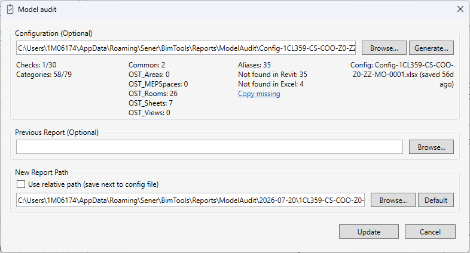
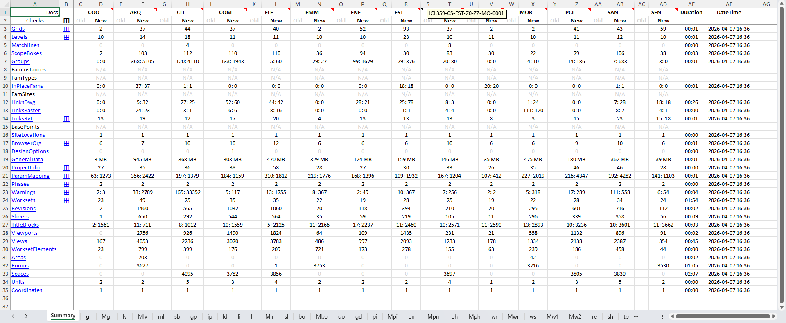
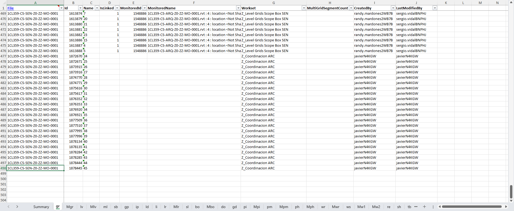
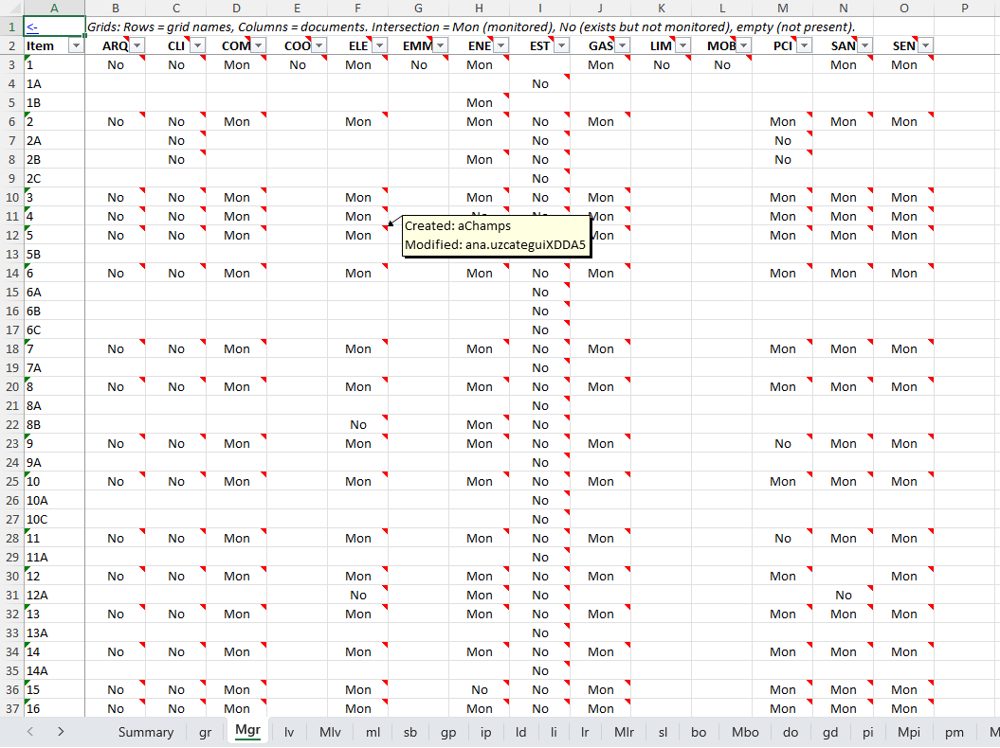
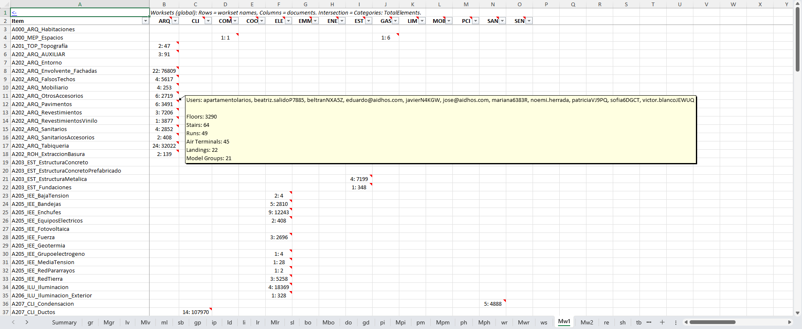
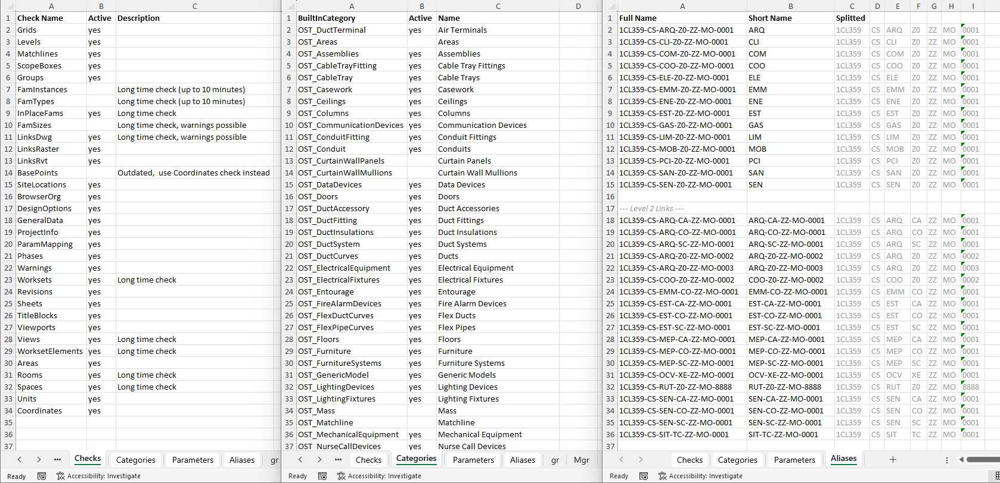

ModelAudit — User Guide
Table of contents
ModelAudit is an automated BIM model audit tool for Autodesk Revit. It analyzes the current document and all loaded linked Revit models. The result is an Excel report with detailed data for each of over thirty checks.
Interface
A dialog with three sections opens on launch.

Configuration (Optional)
Path to an Excel configuration file. Controls which checks to run, which Revit categories to export, and which element parameters to include in the report.
If empty — the built-in default configuration is used (heavy checks disabled, standard set of categories and parameters).
Buttons:
- Browse… — select an existing configuration file.
- Generate… — create a new configuration file with default values. The dialog suggests the path
%APPDATA%\Sener\BimTools\ModelAudit\Config-{ModelName}.xlsx. An Aliases sheet with auto-generated short names for linked documents is also added — these can be edited manually.
A configuration summary is shown below the field in three columns:
- left — number of active checks and categories (hover for full list)
- center — number of parameters per category
- right — configuration file name and last modified time
If the configuration contains errors, the summary is replaced with an error message.
The configuration path is saved between sessions.
Previous Report (Optional)
Path to a previous report. If provided, the Summary sheet will include Old / New columns for comparing values between runs. Old cells contain hyperlinks to detail sheets of the previous report.
New Report Path
Path to save the new report. By default, it is generated as:
%APPDATA%\Sener\BimTools\Reports\ModelAudit\{yyyy-MM-dd}\{ModelName}.xlsx
The date is part of the folder name — re-running on the same day overwrites the file in the same folder.
“Use relative path” checkbox (enabled only if a config file is specified):
When checked, the report path is automatically calculated relative to the config file directory:
[ConfigDir]/Reports/{ModelName}.xlsx
The path field and its buttons become disabled — the path is view-only. On each overwrite, the previous report is automatically saved as a backup:
[ConfigDir]/Reports/backup/{ModelName}_{yyyy-MM-dd_HH-mm-ss}.xlsx
The checkbox state is saved between sessions. If the config file is not specified or does not exist, the checkbox is disabled.
Buttons (available only when “Use relative path” is off):
- Browse… — select a path manually via save dialog.
- Default — generate a new path with the current date.
The absolute path is saved between sessions. In relative mode, it is not overwritten — when the checkbox is unchecked, the previous absolute path is restored.
Run
- Create / Update (or Enter) — create or update the report.
- Cancel (or Esc) — close the dialog without running.
Progress Bar
A progress window with a text log is shown during analysis. The log is read-only. The Stop button cancels processing.
Report Structure
The report is an Excel file (.xlsx). Sheet names are intentionally short (gr, lv, bo, etc.) — navigation is done via hyperlinks, not manual tab switching: Summary links to every detail and matrix sheet; the first cell of each sheet links back to the corresponding Summary row.
Summary
Overview sheet. Rows — checks, columns — documents (current + linked).

- Check name — hyperlink to the detail sheet; ⊞ column — link to the matrix sheet (if any).
- Two columns per document: Old (value from the previous report) and New (current).
- Right columns DateTime and Duration — date of last run and execution time.
- Hovering over a short document name in the header shows the full file name.
Color scheme:
- Yellow background — High status (value requires attention).
- Gray / faded text — Low status (value is normal or unchanged).
Detail Sheets
One sheet per active check. Most sheets include Workset, CreatedBy, LastChangedBy columns.

Matrix Sheets
Ten checks additionally generate a matrix sheet (name: M + detail sheet abbreviation). Links are in the ⊞ column of Summary.
| Sheet | Rows × Columns |
|---|---|
| Mgr | Grids × Documents. Mon — monitored, No — present but not monitored |
| Mlv | Levels × Documents. Cell: elevation value, grayed if not monitored |
| Mlr | Linked files × Documents. Cell: number of link instances |
| Mbo | Documents × Browser organization type (Views / Schedules / Sheets / Modified) |
| Mpi | Documents × ProjectInfo parameters |
| Mpm | Parameters × Documents. Cell: number of categories in binding |
| Mph | Documents × Phases |
| Mwr | Warnings × Documents |
| Mw1 | Worksets × Documents |
| Mw2 | Block matrix: categories × worksets (separate block per document) |


Aliases (hidden)
Mapping table of short document names to full names.
Config (hidden sheets)
Checks, Categories, Parameters sheets save the configuration used at run time. Allows reproducing analysis conditions from an archived report.
Check List (33)
| # | Name | Sheet | Description |
|---|---|---|---|
| 1 | Grids | gr | Grids: name, Id, monitoring (linked element), workset |
| 2 | Levels | lv | Levels: elevation (m), monitoring, workset |
| 3 | Matchlines | ml | Match lines: segment coordinates |
| 4 | ScopeBoxes | sb | Scope Boxes: coordinates, dimensions, workset |
| 5 | Groups | gp | Model groups: name, Id, workset |
| 6 | FamInstances | ei | Family instances with parameters (slow) |
| 7 | FamTypes | et | Family types with parameters (slow) |
| 8 | InPlaceFams | ip | In-Place families: category, Id, instance Ids |
| 9 | FamSizes | fs | RFA file size per family (very slow — saves each family to a temp file) |
| 10 | LinksDwg | ld | DWG/DXF links: status, path, level, Z coordinate |
| 11 | LinksRaster | li | Raster links: source, status, level |
| 12 | LinksRvt | lr | Revit links: name, workset, attachment type (Overlay/Attachment), position |
| 13 | BasePoints | bp | Project and survey base points: coordinates (cm) |
| 14 | SiteLocations | sl | Project location: latitude, longitude, elevation, coordinate system |
| 15 | BrowserOrg | bo | Browser organization schemes: type (views/sheets/schedules), active |
| 16 | DesignOptions | do | Design options: Id, name, active |
| 17 | GeneralData | gd | Document metadata: Long/Short Name, file size, starting view, cloud identifiers |
| 18 | ProjectInfo | pi | ProjectInformation parameters: all parameters except NonVisible |
| 19 | ParamMapping | pm | Project parameter bindings: name, type (Instance/Type), categories |
| 20 | Phases | ph | Project phases: Id, name |
| 21 | Warnings | wr | Revit warnings: description, severity, element Ids |
| 22 | Worksets | ws | Worksets: Id, name |
| 23 | Revisions | re | Sheet revisions: sheet, revision Id, date, number, description |
| 24 | Sheets | sh | Sheets: Id, name, number, IsPlaceholder, title block, grouping parameters from Browser Organization, and custom parameters |
| 25 | TitleBlocks | tb | Title block types and assigned sheets |
| 26 | Viewports | vp | Viewports: type, view, sheet |
| 27 | Views | vw | All views with 32 properties (template, scale, far clip, ViewRange, etc.) and grouping parameters from Browser Organization |
| 28 | WorksetElements | we | Element distribution by workset: category, family, type, count (very slow) |
| 29 | Areas | ar | Areas: area, perimeter, area scheme |
| 30 | Rooms | rm | Rooms: area, height, finish, department + custom parameters |
| 31 | Spaces | sp | MEP spaces: area, height, ventilation system + custom parameters |
| 32 | Units | un | Units: deviations from default values |
| 33 | Coordinates | co | Project coordinates: base points, survey, angle, site name |
Some checks are disabled in the default configuration — managed in the configuration Excel (Checks sheet, Active column).
Configuration Excel
Generated by the Generate… button. It is recommended to edit the file before running the audit.

Checks Sheet
Controls check activity.
| Column | Description |
|---|---|
| Check Name | Check name (matches code, do not change) |
| Active | yes / no (or true / false / 1 / 0) |
| Description | Additional information |
Categories Sheet
Controls active categories for FamInstances and FamTypes checks.
| Column | Description |
|---|---|
| BuiltInCategory | Revit enum value, e.g. OST_Walls (do not change) |
| Active | yes / no (or true / false / 1 / 0) |
| Category Name | Localized name (auto-filled, do not change) |
Parameters Sheet
Controls exported element parameters.
- First row — headers:
Common, then names of active categories. - Common column — parameters exported for all active categories.
- Other columns — category-specific parameters.
- Empty cells are ignored.
- Parameters are searched first on the instance, then on the type.
- Non-existent parameters are logged.
Aliases Sheet
Short document names for Summary headers.
| Column | Description |
|---|---|
| Full Name | Full document name (key, do not change) |
| Short Name | Short display name (editable) |
Short names are generated automatically on creation: the common prefix and suffix are trimmed from all names. Documents not found in the Aliases file get auto-generated short names at run time.
Tips and Notes
Configuration
- Empty ConfigPath is equivalent to the built-in default configuration — safe to clear.
- The summary below the field updates immediately on path change — validation errors are visible before running.
- Validation runs again on Create/Update. If the config is invalid, the run is blocked.
- Unknown check name in Checks sheet → error with list of valid names.
- Invalid BuiltInCategory → error. Any valid BIC from the Revit API is accepted.
- Row order in Checks and Categories sheets does not matter.
- The configuration is re-read on every run (no caching).
- The configuration used at run time is saved in hidden sheets of the report.
Document Names
- Short names appear in Summary headers — keeps the table compact with many links.
- If a linked document appears after config generation — its name is auto-generated; add it manually to the Aliases sheet if needed.
- Edit the Aliases sheet in the config before running if auto-generated abbreviations are inconvenient.
Report Paths
- The new report path is remembered between sessions. Generated automatically on first run.
- The Default button generates a new path with the current date — useful when re-running on a different day.
- Two runs on the same day create files in the same folder → the second run overwrites the file. Use Browse or Default to create a new path if both results need to be kept.
- “Use relative path” — convenient for team workflows: the report is stored next to the config, not in
%APPDATA%. Each overwrite automatically creates a backup with a timestamp in thebackup/folder. - If the report file is open in Excel — a retry dialog appears. The audit will not start until the file is released.
- The previous report path is not filled automatically — specify it manually via Browse.
Performance
- FamInstances and FamTypes are disabled by default — they iterate all elements of the specified categories and extract parameters. Execution time depends on the number of active categories and model size.
- FamSizes is disabled by default —
EditFamily+SaveAsis called for each family to a temporary folder. May take several hours on large models. - WorksetElements is disabled by default — iterates all elements in all worksets.
Linked Models
- Only loaded Revit links are analyzed.
- Documents with the same
Titleare added once.
Report Data
- Numeric values (coordinates, areas, distances) are written as Excel numbers — allowing correct sorting and filtering.
- Composite values (e.g. space-separated Id list) remain strings.
- Line breaks inside parameter values are preserved.
Changelog
[25.34] — 2026/05/14
- The Sheets and Views checks now include grouping parameters from the Project Browser.
- Built-in parameters that were previously set via config are now always included as hardcoded (e.g., IFC for families, Area Type/Design Option/Comments for Areas, etc.). This ensures correct operation regardless of Revit language; other parameters can be added via config.
- In the FamInstances and FamTypes reports, type parameters are no longer shown for instances.
- Added “Use relative path” feature to the New Report Path section.
[25.31] — 2026/04/13
- Fixed an error that occurred when running the audit on a project with nested linked models (links inside links). The RVT Links check now correctly processes all levels of links.